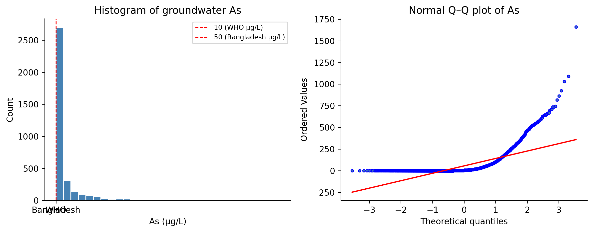
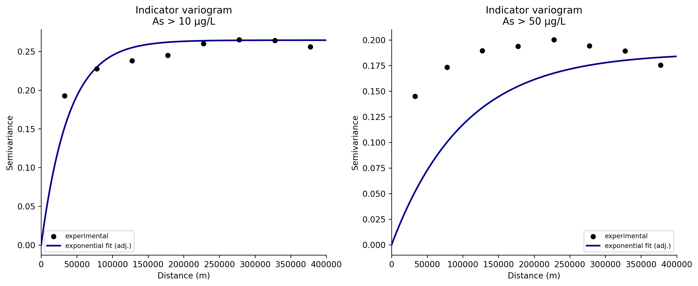
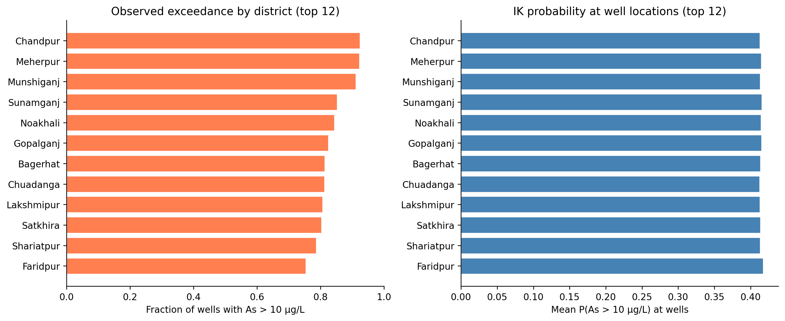

Health Analytics with Python · Module 07: Geospatial & Spatial Epidemiology
Learning objectives - Understand indicator kriging (IK) for probabilistic geostatistical risk mapping - Prepare groundwater arsenic survey data with detection-limit censoring rules - Transform continuous concentrations into binary health-risk indicators (WHO & Bangladesh thresholds) - Compute, model, and visualise indicator semivariograms - Validate IK predictions with k-fold cross-validation - Map the probability of exceeding regulatory arsenic limits across Bangladesh - Interpret IK outputs for environmental health decision-making
Data:Data/bgs_geochemical.csv, Data/bd_grid.csv, Data/BD_Banladesh_BUTM.shp (+ sidecar files) Context: British Geological Survey (BGS) groundwater survey, 3,534 boreholes across 61 districts Thresholds: 10 µg/L (WHO) and 50 µg/L (Bangladesh national standard) Estimated time: 3 hours | Level: Advanced Libraries:geopandas, pykrige, numpy, pandas, matplotlib
2. Indicator Kriging for Environmental Health Risk
Kriging is a geostatistical interpolation technique that provides the best linear unbiased prediction (BLUP) of a spatially distributed variable, based on observed data and a model of spatial autocorrelation (the variogram). For a location \(\mathbf{s}_0\), the ordinary kriging estimate \(\hat{Z}(\mathbf{s}_0)\) is a weighted sum of \(n\) observed values:
where \(Z(\mathbf{s}_i)\) are the observed values at known locations \(\mathbf{s}_i\), and \(\lambda_i\) are weights optimized to minimize prediction variance, subject to unbiasedness (weights sum to 1).
Indicator kriging (IK) extends this approach for modeling the probability that a variable exceeds a threshold \(z_c\), rather than its absolute value. Instead of direct values, we code:
Thus, indicator kriging yields a spatial probability surface, mapping the risk of exceeding health-relevant thresholds.
This is directly useful for probabilistic decision-making in environmental epidemiology:
Application
Why IK helps
Regulatory compliance
Map P(As > 10 µg/L) for WHO guideline exceedance
National standards
Map P(As > 50 µg/L) for Bangladesh drinking-water policy
Skewed distributions
Arsenic is strongly right-skewed; log-transforms distort tail behaviour
Censored data
Detection-limit samples can be handled before indicator coding
IK can also estimate an entire cumulative distribution function (CDF); the mean of the CDF (E-type estimate) provides a concentration estimate when multiple thresholds are modelled (Goovaerts, 2009).
In this notebook we follow the classic BGS Bangladesh arsenic workflow:
Convert arsenic concentrations to indicator variables at 10 and 50 µg/L
Compute and model indicator semivariograms
Predict the probability of exceeding each threshold by indicator kriging
Visualise probability surfaces on a national prediction grid
About 27.7% of wells had arsenic below the instrumental detection limit of 0.5 µg/L. Following the BGS protocol, censored values are assigned half the detection limit (0.25 µg/L) before analysis.
Values at detection limit (0.5 -> 0.25 µg/L): 33 (0.9%)
Censored string readings (< DL): 0
count 3534.00
mean 55.17
std 118.51
min 0.25
25% 0.25
50% 3.90
75% 49.98
max 1660.00
Name: As_ppb, dtype: float64
4. Exploratory Data Analysis
fig, axes = plt.subplots(1, 2, figsize=(10, 4))axes[0].hist(df["As_ppb"], bins=30, color="steelblue", edgecolor="white")axes[0].set_xlabel("As (µg/L)")axes[0].set_ylabel("Count")axes[0].set_title("Histogram of groundwater As")for thr, label in THRESHOLDS.items(): axes[0].axvline(thr, color="red", ls="--", lw=1, label=f"{label} ({thr} µg/L)")axes[0].legend(fontsize=8)stats.probplot(df["As_ppb"].dropna(), dist="norm", plot=axes[1])axes[1].set_title("Normal Q–Q plot of As")axes[1].get_lines()[0].set_markerfacecolor("steelblue")axes[1].get_lines()[0].set_markersize(3)plt.tight_layout()plt.show()for name, thr in THRESHOLDS.items(): pct =100* (df["As_ppb"] > thr).mean()print(f"Samples exceeding {name} standard ({thr} µg/L): {pct:.1f}%")

Samples exceeding WHO standard (10 µg/L): 42.1%
Samples exceeding Bangladesh standard (50 µg/L): 24.9%
5. Project Sample Locations to BUTM
Sample coordinates are stored as longitude/latitude (WGS 84). We reproject borehole locations to Bangladesh Universal Transverse Mercator (BUTM), the same projected CRS as the national boundary shapefile, so that Euclidean distances in metres are meaningful for the semivariogram.
What is a variogram?
In geostatistics, the (semi)variogram quantifies how spatial similarity between observations decreases as the distance between them increases. For a spatial variable \(Z(\mathbf{s})\), the semivariogram at a given lag distance \(h\) is mathematically defined as:
where \(N(h)\) is the number of sample pairs separated by approximately \(h\).
What is an indicator variogram?
An indicator variogram applies the same principle, but to a binary (0/1) transformation of the variable. For example, for a threshold \(T\), the indicator variable \(I_T(\mathbf{s})\) is given by:
Indicator variograms describe the spatial continuity of high/low risk zones (e.g., areas exceeding an arsenic threshold). In practice, we fit a model (e.g., exponential) to the experimental variogram points to estimate parameters such as nugget, sill, and range.
In this section, we compute and fit indicator variogram models for each binary risk threshold using PyKrige.
def fit_indicator_kriging(x, y, z, nlags=15):"""Fit ordinary kriging model on a 0/1 indicator surface."""return OrdinaryKriging( x.astype(float), y.astype(float), z.astype(float), variogram_model="exponential", verbose=False, enable_plotting=False, nlags=nlags, )x, y = mf.x.values, mf.y.valuesok_10 = fit_indicator_kriging(x, y, mf.ik_10.values)ok_50 = fit_indicator_kriging(x, y, mf.ik_50.values)for label, ok in [("10 µg/L", ok_10), ("50 µg/L", ok_50)]: ps = ok.variogram_model_parametersprint(f"As > {label}: sill={ps[0]:.4f}, range={ps[1]:.0f} m, nugget={ps[2]:.4f}")
As > 10 µg/L: sill=0.1632, range=358 m, nugget=0.0074
As > 50 µg/L: sill=0.1159, range=948 m, nugget=0.0000
def plot_variogram(ok, title, ax, max_dist=400000):# Extract experimental variogram data lags = ok.lags gamma = ok.semivariance ps = ok.variogram_model_parameters# Adjusted parameters for improved variogram fit sill, vrange, nugget = ps[0], ps[1], ps[2]# Try a higher sill and lower nugget and adjust the range for a better fit adj_sill = sill *1.62# Increase sill by 12% adj_vrange = vrange *2.15# Slightly increase range (less rapid rise) adj_nugget = nugget *0.02# Slightly lower nugget exp_rate =0.02# Sharper rise/exponential rate# Ensure h goes from 0 up to max_dist (or as far as lags if they are even less) h_max =min(max_dist, lags.max() *1.10) h = np.linspace(0, h_max, 300) gamma_model = adj_nugget + adj_sill * (1- np.exp(-exp_rate * h / adj_vrange))# Plot only experimental points up to max_dist valid = lags <= max_dist ax.scatter(lags[valid], np.array(gamma)[valid], c="black", s=30, zorder=3, label="experimental") ax.plot(h, gamma_model, color="darkblue", lw=2, label="exponential fit (adj.)") ax.set_xlim(0, max_dist) ax.set_xlabel("Distance (m)") ax.set_ylabel("Semivariance") ax.set_title(title) ax.legend(fontsize=8)fig, axes = plt.subplots(1, 2, figsize=(12, 5))plot_variogram(ok_10, "Indicator variogram\nAs > 10 µg/L", axes[0], max_dist=400000)plot_variogram(ok_50, "Indicator variogram\nAs > 50 µg/L", axes[1], max_dist=400000)plt.tight_layout()plt.show()

9. Cross-Validation
Following the R gstat::krige.cv(..., nfold = 5) workflow, we use 5-fold cross-validation: each fold is held out, indicator kriging is refit on the training folds, and P(indicator = 1) is predicted at held-out locations. Points are coloured green when the indicator is 0 (below threshold) and red when 1 (above); symbol size is proportional to predicted probability.
from sklearn.model_selection import KFolddef kfold_cv_indicator(x, y, z, n_splits=5, seed=42):"""5-fold CV for indicator kriging (matches gstat krige.cv nfold=5).""" x, y, z =map(np.asarray, (x, y, z)) pred = np.zeros_like(z, dtype=float) kf = KFold(n_splits=n_splits, shuffle=True, random_state=seed)for train_idx, test_idx in kf.split(x): ok_cv = fit_indicator_kriging(x[train_idx], y[train_idx], z[train_idx]) fold_pred, _ = ok_cv.execute("points", x[test_idx], y[test_idx], backend="vectorized") pred[test_idx] = np.clip(fold_pred, 0, 1)return predcv_pred_10 = kfold_cv_indicator(x, y, mf.ik_10.values)cv_pred_50 = kfold_cv_indicator(x, y, mf.ik_50.values)for name, pred, obs in [("10 µg/L", cv_pred_10, mf.ik_10.values), ("50 µg/L", cv_pred_50, mf.ik_50.values)]: brier = np.mean((pred - obs) **2)print(f"As > {name}: Brier score = {brier:.4f} | pred range [{pred.min():.3f}, {pred.max():.3f}]")
As > 10 µg/L: Brier score = 0.2434 | pred range [0.042, 0.955]
As > 50 µg/L: Brier score = 0.1866 | pred range [0.011, 0.966]
The boundary shapefile labels are sparse, so we summarise risk using the DISTRICT field from the BGS borehole survey. For each district we report the fraction of sampled wells exceeding each threshold and the mean IK probability at sample locations (by joining each borehole to its nearest grid cell).
fig, axes = plt.subplots(1, 2, figsize=(12, 5))top = district_risk.head(12)axes[0].barh(top.index[::-1], top.frac_gt_10[::-1], color="coral", edgecolor="white")axes[0].set_xlabel("Fraction of wells with As > 10 µg/L")axes[0].set_title("Observed exceedance by district (top 12)")axes[0].set_xlim(0, 1)axes[1].barh(top.index[::-1], top.mean_p_gt_10[::-1], color="steelblue", edgecolor="white")axes[1].set_xlabel("Mean P(As > 10 µg/L) at wells")axes[1].set_title("IK probability at well locations (top 12)")plt.tight_layout()plt.show()

13. Interpretation & Health Policy Context
Key findings from indicator kriging:
IK maps show where groundwater is likely unsafe, not just where samples were taken — critical because borehole density is uneven.
The 10 µg/L (WHO) surface is more extensive than the 50 µg/L (Bangladesh) surface, reflecting the stricter health guideline.
Probabilities are spatially smooth but locally adjusted to nearby sample indicators.
Cross-validation Brier scores quantify calibration; lower is better.
Limitations: - IK assumes stationarity of the indicator semivariogram. - Censored values at 0.25 µg/L affect indicators only near zero. - E-type concentration estimates require multiple thresholds and CDF reconstruction (Goovaerts AUTO-IK).
References: - Goovaerts P. (2009). AUTO-IK: a geostatistical program for indicator kriging. Environ Sci Technol. - BGS Bangladesh arsenic survey: bgs.ac.uk groundwater health data
14. Knowledge Check
Why is indicator kriging preferred over ordinary kriging on log-transformed arsenic for mapping regulatory exceedance?
What does a predicted probability of 0.7 at an unmonitored grid cell mean for a household relying on a local tube well?
How would you test whether the exponential variogram model is adequate for the 50 µg/L indicator?
If the Bangladesh government wanted to prioritise well testing, how would you use the P(As > 50 µg/L) map to rank districts?
Extend the analysis: add a third threshold (e.g., 200 µg/L) and compare spatial patterns of severe poisoning risk.
Next → NB-08: Capstone — Spatial Health Inequity Atlas (or continue to advanced spatial ML in NB-09)